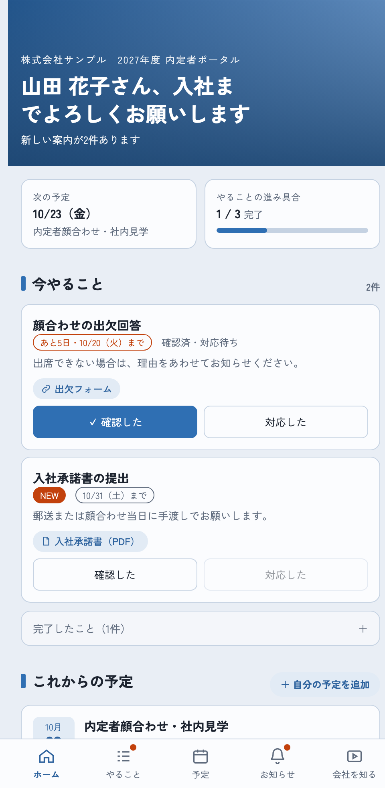

スプレッドシートに入力するだけで、内定者専用のポータルサイトが更新されます。このガイドでは、毎日の更新のしかたと、内定者への案内のしかたを説明します。
2026年10月版

内定者は、LINE などで受け取った専用の URL とパスワードでポータルを開きます。スマートフォンでの閲覧を前提にした画面です。
内定者ごとに専用のページになっていて、他の内定者の情報は見えません。
案内はまずポータルに載せ、LINE では「ポータルを更新しました」と伝えるだけにします。内容はすべてポータルに残るので、LINE のメッセージが流れてしまっても困りません。
スプレッドシートを変更すると、ポータルに自動で反映されます。保存ボタンを押したり、何かを公開する操作をしたりする必要はありません。
スプレッドシートの下部に、シートのタブが並んでいます。青いタブはご担当者さまが編集するシート、グレーのタブは自動で書き込まれるシートです。
| シート | 内容 | 編集 |
|---|---|---|
| 設定 | 会社名、テーマ色、トップ写真など | はじめに1回 |
| 表示文言 | 挨拶や見出しの言葉 | 必要なときだけ |
| 内定者 | 内定者の名前と状態。URL・パスワードの発行もここから | 内定者が増えたとき |
| 予定 | 顔合わせ、イベント、内定式など | 随時 |
| やること | 提出物、準備するもの、回答してほしいもの | 随時 |
| お知らせ | 追加の案内、固定のお知らせ | 随時 |
| リンク | 会社HP、採用サイト、SNS | はじめに1回 |
| ギャラリー | 職場の写真 | はじめに1回 |
| コンテンツ | 動画、インタビュー記事 | 随時 |
| 記録_チェック／記録_自分の予定／ログ | 内定者の操作の記録（自動） | 編集しない |
| 進捗一覧 | 誰が何に対応したかの一覧（自動） | 見るだけ |
予定・やること・お知らせ・コンテンツの4つのシートには、共通の列があります。
| 列 | 使い方 |
|---|---|
| ID・登録日時 | 行に入力すると自動で入ります。編集しないでください。 |
| 公開 | チェックを入れたものだけがポータルに表示されます。書きかけのうちは外しておけば、内定者には見えません。 |
| 公開開始日 | 日付を入れると、その日になるまで表示されません。空欄ならすぐに表示されます。 |
| 対象 | 誰に見せるかを決めます（下の表）。空欄は「全員」と同じです。 |
| 書き方 | 表示される人 |
|---|---|
全員（または空欄） | すべての内定者 |
承諾済／未承諾 | 「内定者」シートの「状態」が一致する人 |
インターン中 など | 「内定者」シートの「グループ」が一致する人 |
S001,S003 | 指定した内定者IDの人だけ（カンマで区切って複数指定できます） |
「リンク」「リンク・添付」の列には、表示名|URL の形で書きます。| は半角の縦線です。セルの中で改行すると、複数付けられます。
出欠フォーム|https://forms.gle/xxxxx 入社承諾書（PDF）|https://drive.google.com/file/d/xxxxx/view
Google ドライブのファイルや PDF、表示名に「PDF」「資料」「添付」を含むものは、添付のアイコンで表示されます。セル内の改行は、Mac なら ⌘ + Enter、Windows なら Alt + Enter です。
案内文の文面は、「表示文言」シートの「発行メッセージ」で変えられます。{名前}、{URL}、{パスワード} の部分は、自動で置き換わります。
内定者に、提出や回答などの対応をしてほしいものです。
| 列 | 書くこと | 例 |
|---|---|---|
| タイトル | 何をしてほしいか | 入社承諾書の提出 |
| 説明 | やり方や注意点（改行できます） | 署名のうえ、郵送してください。 |
| 期限 | 日付。空欄なら「期限なし」 | 2026/10/31 |
| リンク・添付 | フォームや書類 | 入社承諾書（PDF）|https://… |
| 完了の条件 | 下の2つから選びます | 対応したで完了 |
期限の7日前からは、内定者の画面でオレンジ色の「あと◯日」と表示されます。完了したものは、「完了したこと」の一覧に移ります。
| 列 | 書くこと | 例 |
|---|---|---|
| 日付・開始・終了 | 終了は空欄でもかまいません | 2026/10/23 14:00 17:00 |
| タイトル | 予定の名前 | 内定者顔合わせ |
| 場所 | 会場やオンラインの別 | 本社 5F 会議室／Google Meet |
| 詳細 | 持ち物や服装など | 持ち物：筆記用具 |
| リンク | 参加 URL や地図 | 参加URL|https://meet.google.com/… |
日付が過ぎた予定は、ポータルから自動で消えます。内定者が自分で追加した予定（インターンの出勤など）は、「記録_自分の予定」シートで確認できます。
| 列 | 書くこと |
|---|---|
| 掲載日 | 新しい日付のものから順に並びます |
| タイトル・本文 | 本文は長くてもかまいません。空行を入れると段落が分かれます。一覧では冒頭だけが表示され、「詳細を見る」で全文が開きます。 |
| リンク・添付 | 詳細ページの下に表示されます |
| 固定 | チェックを入れたものが一番上に固定されます。固定できるのは1件だけで、複数にチェックがある場合は掲載日の新しいものが固定されます。 |
固定のお知らせの下には、新しいものから3件を表示します。それより古いものは「過去のお知らせ」にまとめて表示されます。表示件数は「設定」シートで変えられます。
「リンク」シートの、使うものの URL 列に入力します。URL が空欄のものは表示されません。
ギャラリーは3〜5枚がおすすめです（最大10枚）。横長の写真がきれいに表示されます。
| 種類 | 書き方 |
|---|---|
| 動画 | YouTube に「限定公開」でアップロードし、その URL を「URL」列に貼ります。サムネイルは自動で表示されます。 |
| 記事 | 「本文」列に記事を書きます。お知らせと同じく、空行で段落が分かれます。 |
| 外部リンク | 見てほしいページの URL を「URL」列に貼ります。 |
「補足」には「3分」「2024年入社」などの短い情報を書きます。
| 項目 | 内容 |
|---|---|
| 会社名・ポータル名 | 画面上部に表示されます |
| テンプレート | スタンダード／やわらか／きちんと の3種類から選びます |
| テーマ色 | #2f6fb3 のような色コードです。ボタンや背景に使われます |
| トップ写真 | 空欄の場合は、テーマ色のグラデーションになります |
| 問い合わせ先の表示 | ログイン画面に「〇〇までご連絡ください」と表示されます |
| ログイン保持日数 | パスワードを入れ直さずに使える日数です |
| 自分の予定の追加・選択肢 | 内定者が自分で予定を追加できるか、追加するときの選択肢 |
見出しやメニューの言葉を変えられます。「文言」列に書いた言葉が使われ、空欄の場合は「既定の文言」が使われます。{名前} は内定者の表示名に置き換わります。
「進捗一覧」シートに、内定者 × やることの表が自動で作られます。内定者がボタンを押すたびに更新されます。
| 表示 | 意味 |
|---|---|
| 未確認 | まだ見ていない、またはボタンを押していない |
| 確認済 | 内容は確認したが、対応はまだ |
| 対応済 | 完了 |
| 対象外 | その人には表示していない |
| 太字 | 期限を過ぎているのに完了していない |
「前回ログイン」が「未ログイン」の人は、まだ一度もポータルを開いていません。やることを追加・変更した直後に表を最新にしたいときは、メニュー「内定者ポータル」→「進捗一覧を更新」を押してください。
| こんなとき | 確認すること |
|---|---|
| 追加した内容がポータルに出ない | 「公開」にチェックが入っているか。「公開開始日」が未来の日付になっていないか。「対象」がその人に合っているか。 |
| 写真が表示されない | ドライブの共有設定が「リンクを知っている全員」になっているか。 |
| 内定者がパスワードを忘れた | 「内定者」シートでその人の行を選び、「URL・パスワードを発行」で再発行して送り直します。 |
| 「ロックしています」と表示された | パスワードを5回続けて間違えると、15分間ログインできなくなります。時間をおいてから試してもらってください。 |
| 内定者がスマホを変えた | 同じ URL とパスワードで開けます。パスワードがわからなければ再発行してください。 |
| ID がずれた・消えた | 自動の列なので、手で直さずに運営担当までご連絡ください。 |
| その他、わからないこと | 運営担当までお気軽にご連絡ください。 |